A spring centerpiece doesn't need to be complicated to make a table feel refreshed. Most of the ideas below come down to one strong focal point, a bowl of lemons, a trio of mason jars, a single flowering branch, rather than an elaborate arrangement that takes an afternoon to put together.
Fresh flowers bring real fragrance and texture, but they come with upkeep and a shorter shelf life; faux versions last indefinitely and travel well between seasons. Neither is the "right" choice, it comes down to how much maintenance feels worth it for the look.

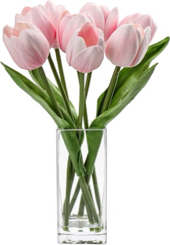
Briful Pink Artificial Tulips in Clear Glass Vase, Real Touch Arrangement
Shop on Amazon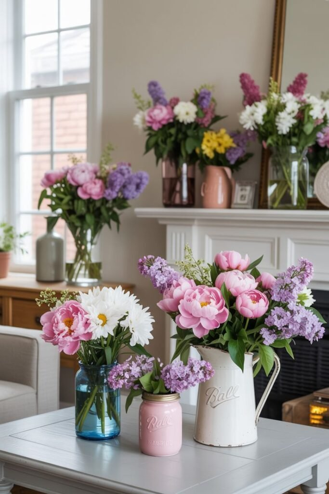
Real Touch Artificial Tulips, 20 Stems, Premium Silk Feel, UV-Resistant
Shop on AmazonBriful Pink Artificial Tulips in Clear Glass Vase, Real Touch Arrangement
Shop on Amazon18 Spring Centerpiece Ideas
1. Glass Cloche With Spring Decor
A glass cloche dome turns almost anything underneath it into something that looks curated.
Moss, tiny flowers, or decorative eggs placed inside the dome instantly read as more intentional than the same items left loose on a table.
It's a small detail, but the glass does a lot of visual work, it's a little like a miniature museum exhibit for the dining table.
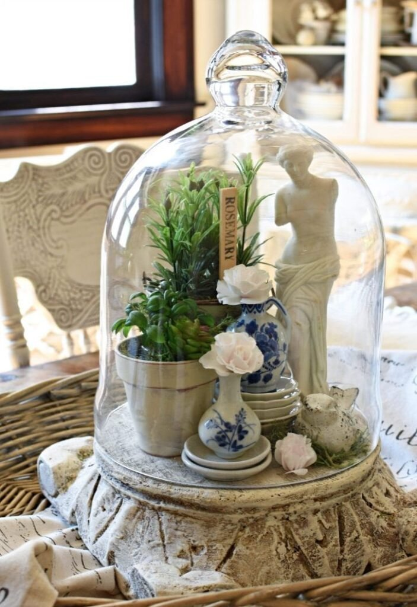
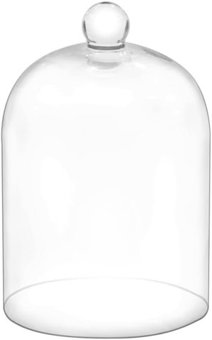
7.5 Inch Tall Handmade Glass Cloche, Thick and Sturdy, for Terrariums and Decor
Shop on Amazon2. Single Statement Branch Arrangement
Sometimes less really does beat more.
Instead of filling a vase with flowers, one or two flowering branches, cherry blossom, magnolia, or even simple leafy stems, left mostly on their own make a quietly dramatic statement.
The negative space around a single branch gives the whole arrangement a calmer, more modern feel than a full bouquet usually allows for.
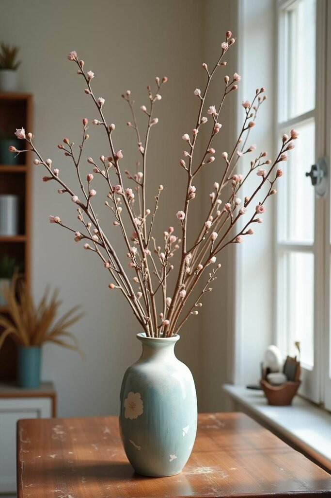
3. Layered Lanterns With Greenery
Lanterns alone make a table feel cozy, and adding greenery around them pushes that feeling straight into spring.
Two or three lanterns at different heights, with eucalyptus or faux ivy tucked around their bases and candles placed inside, is the whole arrangement, no florals required.
Warm candlelight does a lot of the emotional work on its own, which makes this one of the easier ideas to pull together with almost no fuss.
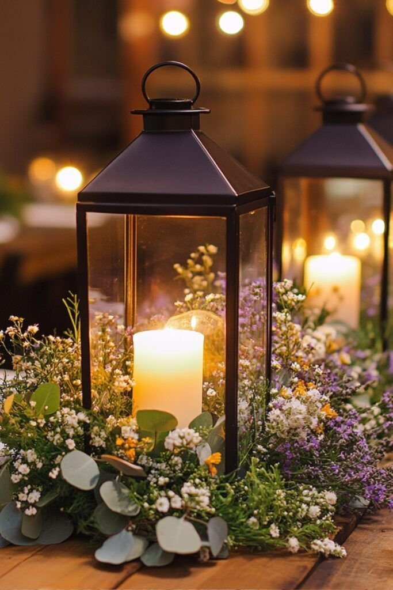
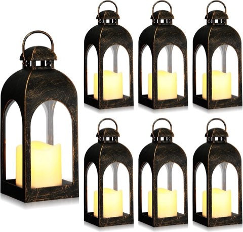
Tujoe 6 Piece 10 Inch LED Candle Lanterns, Indoor and Outdoor, Dark Bronze
Shop on Amazon4. Vintage Bottle Bud Vase Lineup
This idea costs almost nothing if the bottles come from thrifting.
A collection of old bottles, each holding a single stem and lined up together, creates a repetition that reads as intentional and a little artsy rather than random.
Each bottle also catches light a little differently, which gives the whole lineup a subtle sparkle during the day.
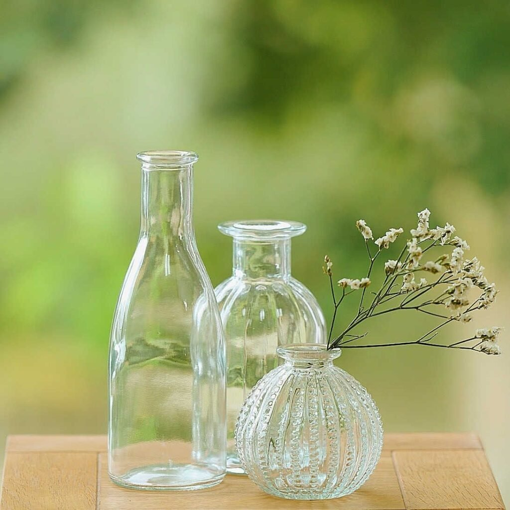
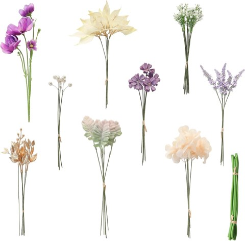
Floroom 45 Piece Artificial Greenery and Flower Picks Box Set for DIY Arrangements
Shop on Amazon5. Floating Flower Bowl
This one looks considerably fancier than the five minutes it actually takes.
A shallow glass bowl filled with water, topped with flower heads or petals and a few floating candles for extra drama, creates an instant spa-like centerpiece.
Sturdier blooms hold up far better floating in water than delicate ones, which tend to sink before the table's even set.
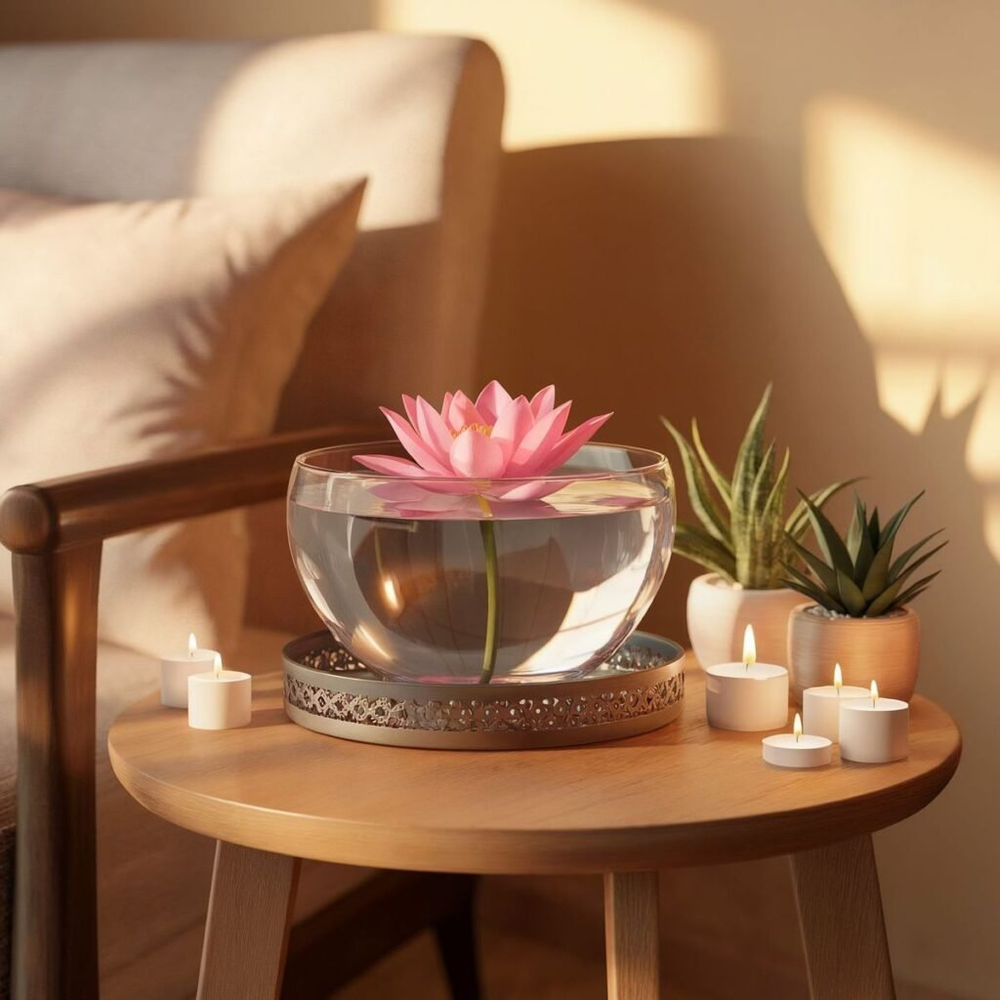
6. Wildflower Mason Jar Trio
For cozy farmhouse character without much effort, three small mason jars filled with different wildflowers is hard to beat.
Varying the heights slightly keeps the trio looking casual and charming rather than stiff or overly arranged.
It's an especially good fit for a breakfast table, and it scales down easily for a small apartment or compact dining space.
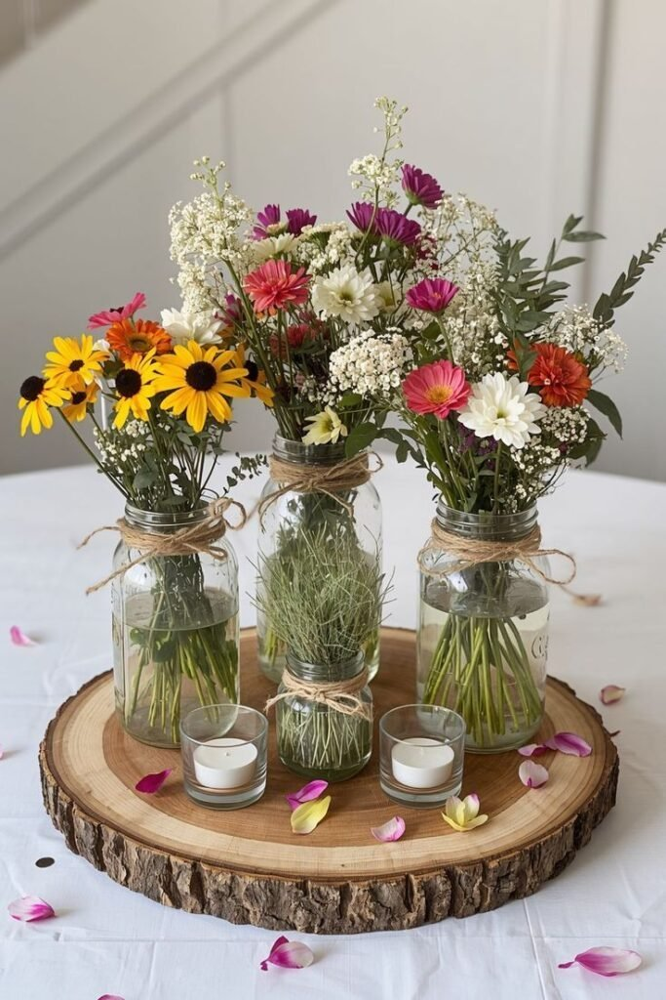
7. Tiered Tray Mini Garden Centerpiece
A tiered tray isn't just for a dessert table, it works just as well as a miniature garden display.
Small plants, moss balls, and tiny decor pieces stacked across each level build height without taking up much actual table space.
The result feels playful but still organized, and it suits a kitchen island or entry table especially well.
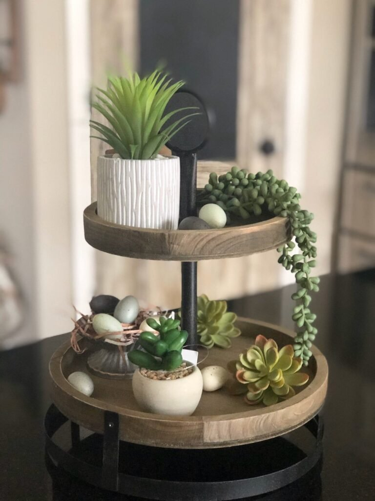
8. Fruit and Floral Combo Centerpiece
Flowers look good, fruit looks fresh, and combining the two makes for a centerpiece that feels genuinely alive.
Scattering a few lemons or oranges around a low floral arrangement adds a juicy pop of color and a subtle citrus scent at the same time.
It reads as considerably more expensive than it actually costs, which is a trick plenty of restaurants rely on for exactly this reason.
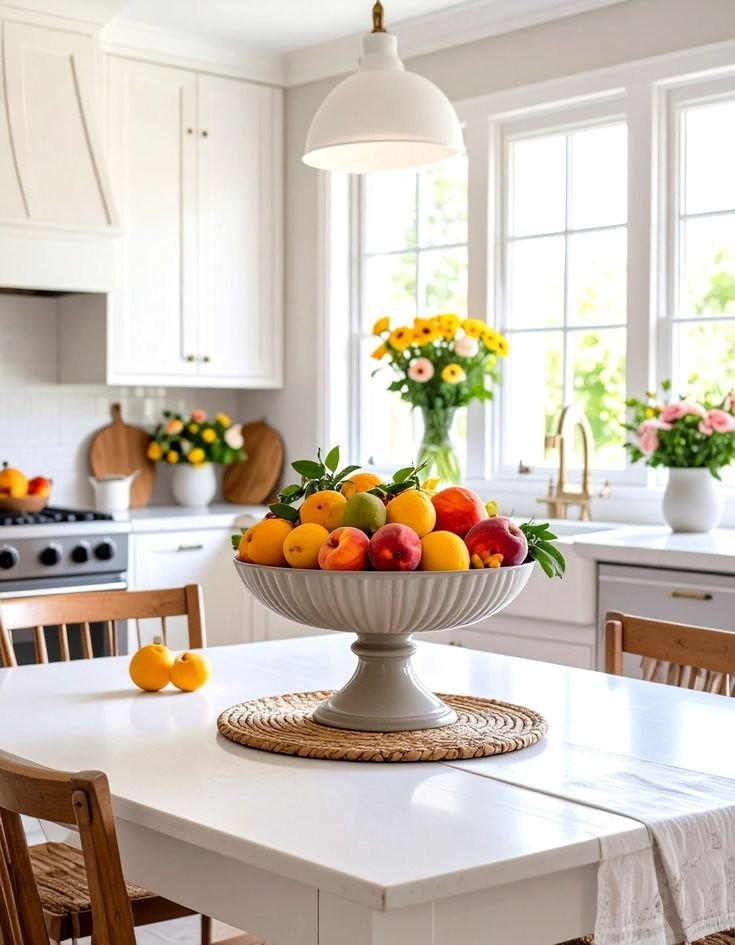
9. Pastel Books Stack With Mini Vase
For a slightly more modern, artsy centerpiece, a small stack of books does double duty as both styling and height.
Two or three pastel or neutral books, topped with a tiny vase, keeps the whole arrangement simple and clean, especially well suited to a coffee table rather than a dining table.
Keeping the book covers plain matters here, since a busy cover tends to undercut the calm look the rest of the arrangement is going for.
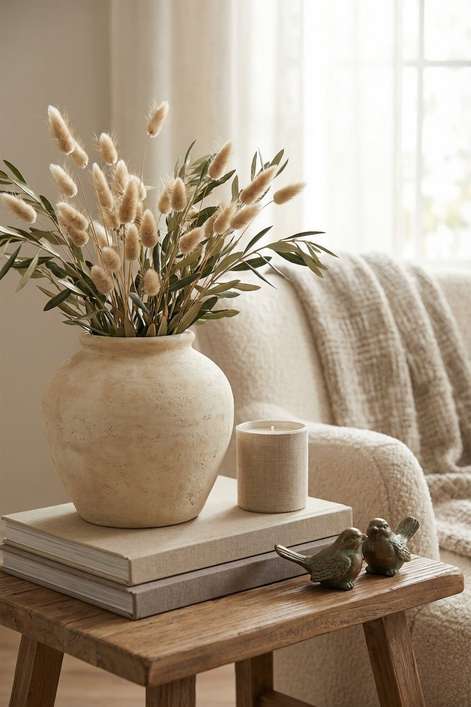
10. Mixed Textures Decorative Bowl Arrangement
For something a little more earthy and grounded, a bowl filled with texture rather than flowers works surprisingly well.
Moss balls, dried botanicals, or wooden beads piled into a large bowl build a rich look without a single stem to water.
There's no wilting and no maintenance involved, which makes it one of the lower-drama options on this whole list.
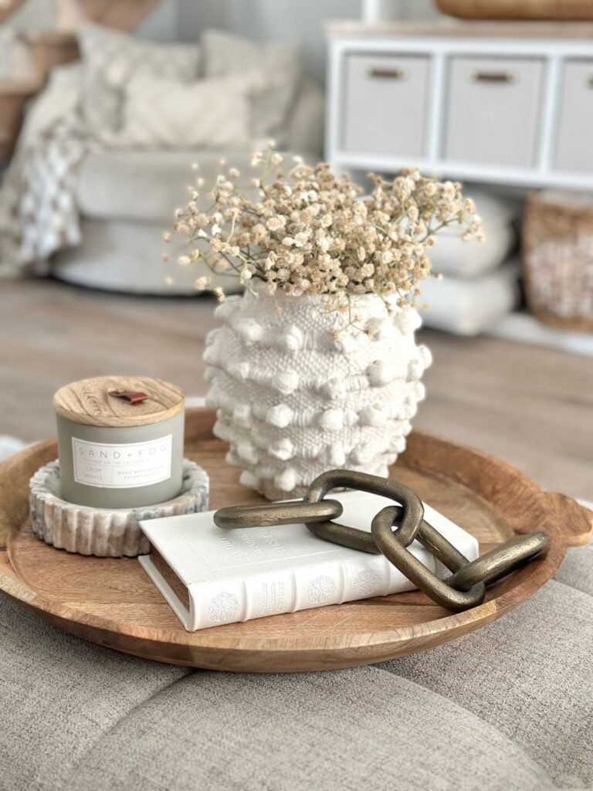
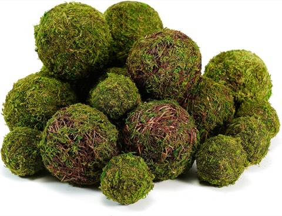
Decorative Moss Balls Set, 18 Piece, Bowl Fillers and Centerpiece Decor
Shop on Amazon11. Lemon Bowl Kitchen Island Centerpiece
This one is about as low-effort as centerpieces get, yet it never goes unnoticed.
A large bowl filled with nothing but lemons brings a bright pop of yellow that stands out against a neutral kitchen, and it adds a genuinely fresh scent to the room at the same time.
It reads a little like a styled cooking-show set, minus any actual cooking required.
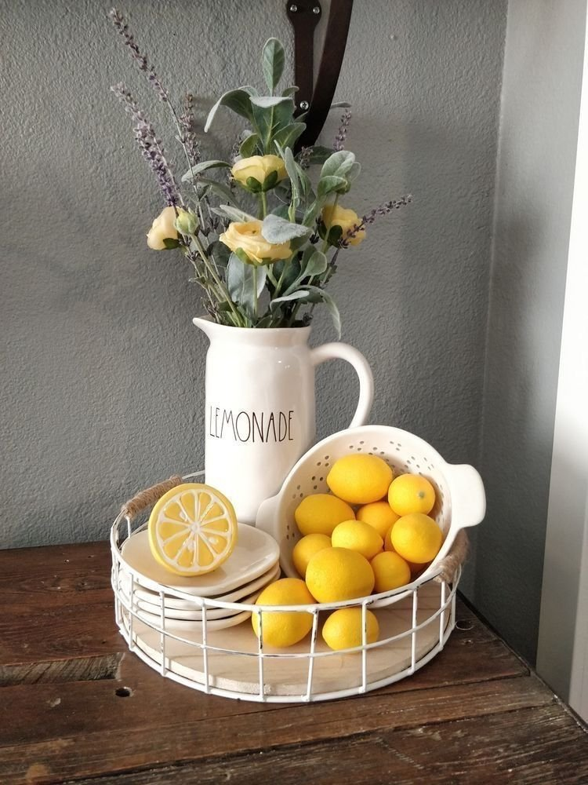
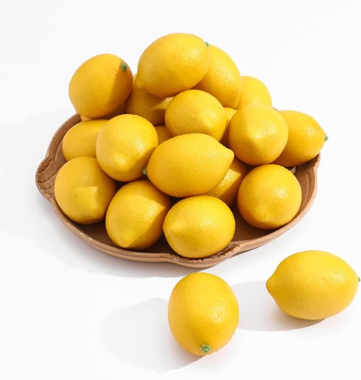
dallisten 12 Piece Lifelike Artificial Lemons for Bowls and Kitchen Decor
Shop on Amazon12. Candle Cluster With Spring Colors
Flowers usually get all the credit, but a candle cluster can carry a table just as well on its own.
Five to seven candles in different heights and soft spring colors, sage, blush, cream, built with no flowers or greenery involved, let the glow do the work instead.
Fewer moving pieces also means less upkeep, which is a quiet bonus a floral centerpiece doesn't offer.
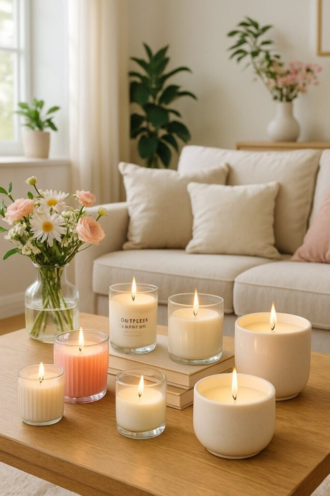
13. Rustic Basket With Potted Herbs
This one genuinely smells as good as it looks.
Small pots of basil, mint, and rosemary grouped inside a woven basket double as both centerpiece and something that can be snipped straight into dinner.
Functional decor like this tends to get more actual use than a purely decorative arrangement ever does.
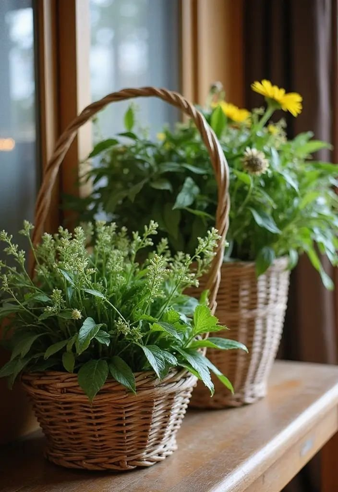
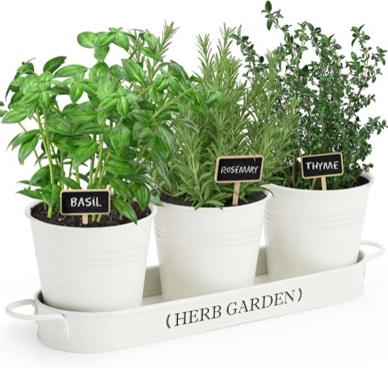
PERFNIQUE Indoor Herb Garden Planter, Farmhouse Pots with Tray and Markers
Shop on Amazon14. Woven Runner With Scattered Bud Vases
Instead of one large arrangement, scattering several tiny ones across a runner creates a lighter, airier look.
Five to seven small bud vases, each holding a single stem, lined up along a woven runner, feels far less bulky than a single centerpiece would.
It's also easy to shift the vases around during a meal, which a larger arrangement rarely allows for.
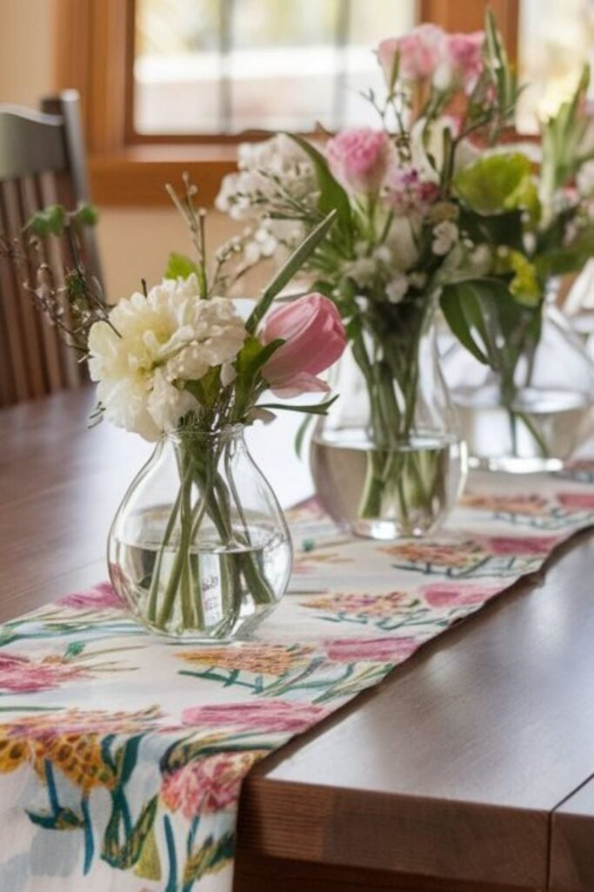
15. Neutral Linen and Greenery Runner
Sometimes a centerpiece doesn't need an actual object at all, just texture.
A neutral linen runner down the table with greenery draped casually across it, no vases and no height involved, creates a soft, organic look on its own.
It reads as understated rather than themed, which suits a table that doesn't want to announce the season too loudly.
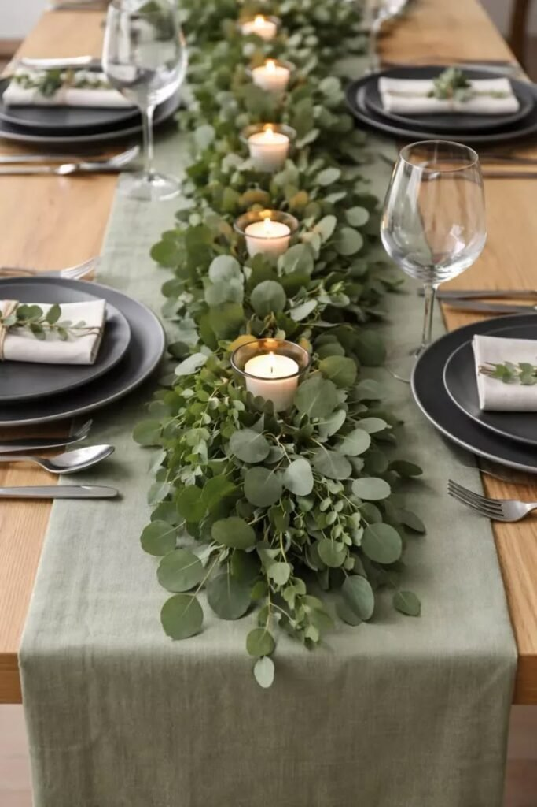

16. Classic Tulip Vase Centerpiece
Tulips read as spring almost instantly, with very little styling required to make them work.
One clear glass vase, stems trimmed unevenly, left to lean naturally rather than arranged too precisely, is really the whole idea.
Keeping it simple matters here, tulips tend to look better a little undone than perfectly arranged.
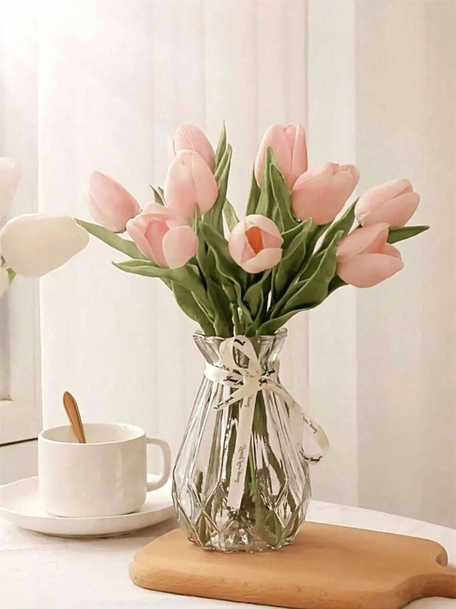
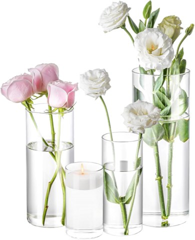
Homjoy 4 Pack Glass Cylinder Vases, 4, 6, 8 and 10 Inch, Hurricane Candle Holders
Shop on Amazon17. Wooden Tray With Candles and Greenery
Candles and greenery together are a reliably cozy combination that rarely misses.
A long wooden tray down the center of the table, layered with eucalyptus, a few pillar candles, and small buds, builds real texture without much effort.
Mixing textures this way tends to look richer than a single large arrangement, and it stays relaxed rather than formal.
Hanobe 17.7 Inch Round Decorative Tray for Coffee Table and Ottoman, Vintage Brown
Shop on AmazonSggvecsy 8 Pack Artificial Eucalyptus Garland, Faux Hanging Greenery
Shop on Amazon18. Farmhouse Pitcher Flower Arrangement
An actual kitchen pitcher makes a surprisingly good vase, and it skips the need for anything fancier.
An old ceramic or enamel pitcher filled with loose blooms reads as charming and relaxed, like the flowers were just gathered from the garden a few minutes earlier.
A little imperfection actually helps here, something too polished starts to feel more like a hotel lobby than a breakfast table.
Rustic Farmhouse Ceramic Vase, 9.1 Inch Wide, Decorative
Shop on AmazonWhite Ceramic Pitcher Vase with Handle, Honeycomb Texture, 7 x 8 Inch
Shop on AmazonWhat Makes a Good Spring Centerpiece
The best spring centerpieces lean into a handful of seasonal cues, soft pastels, fresh greenery, a bit of citrus, natural textures like wood and woven baskets, rather than trying to cram every spring element onto one table at once. Restraint usually reads better than abundance here.
Pastel Artificial Flowers Combo Box, Pink and Blue, Fake Roses and Foliage
Shop on AmazonNatural Rope Wicker Flower Baskets, 3 Pack, Small Wedding Baskets
Shop on AmazonColor does a lot of the seasonal signaling on its own. Blush pink, soft yellow, sage green, and cream all read as spring almost instantly, and they pair easily with the neutral wood and ceramic pieces most homes already have on hand.
Remagr 12 Pack Pastel Cheesecloth Gauze Table Runners
Shop on AmazonHug Donut Decorative Vase Set, Sage Green, Modern Nordic Boho Style
Shop on AmazonFinal Thoughts
None of these eighteen ideas require an elaborate setup or an expensive flower order. Most come together in under fifteen minutes, using items that are often already sitting around the house, a pitcher, a stack of books, a handful of jars.
When a room starts to feel a little stale, swapping out the centerpiece is usually a faster fix than redecorating the whole space, a small move that changes the feel of the whole table.